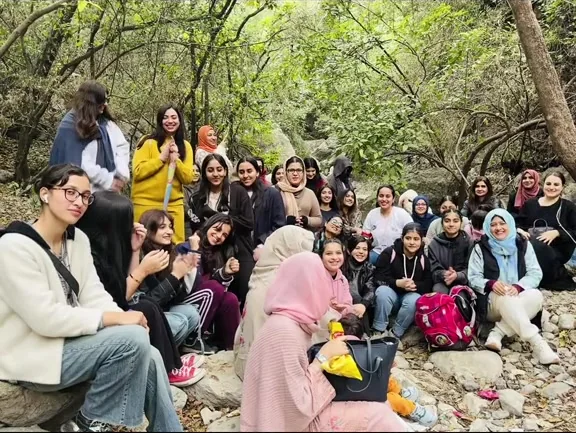
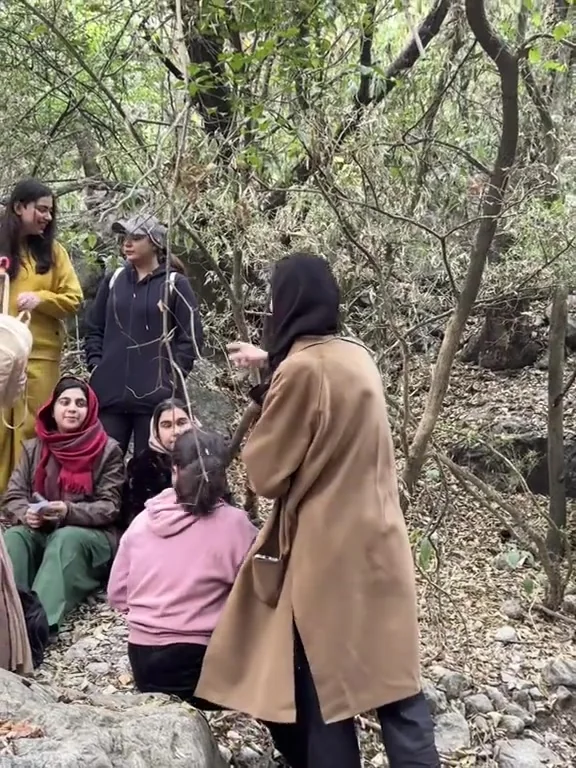
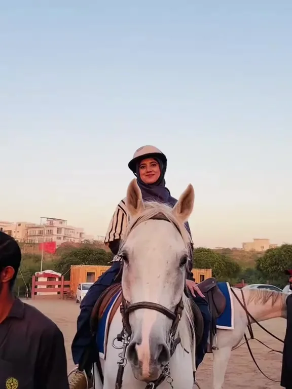
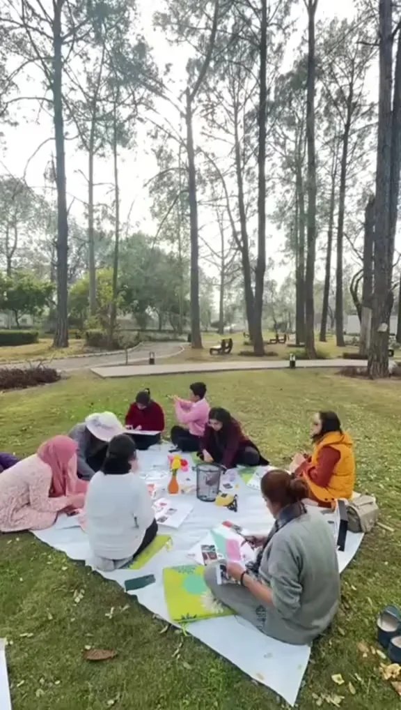
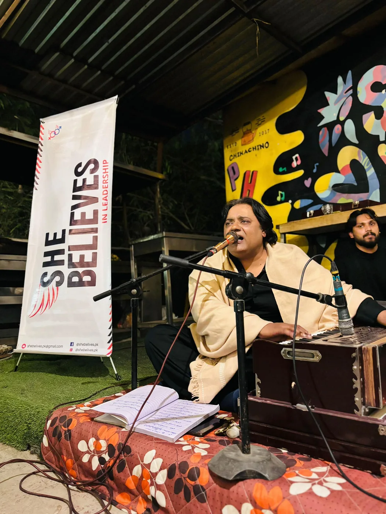
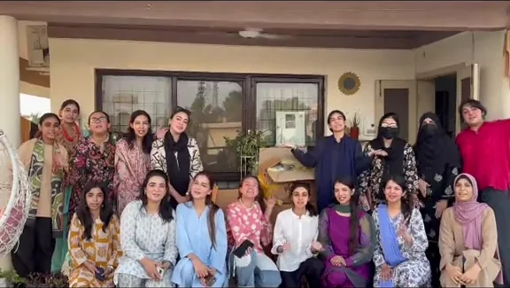

What is clear from the outside
The public feed shows women-focused camps, workshops, tasters and gatherings. Several posts explicitly call sessions beginner-friendly; confirm the level for the experience you want.
Independent concept preview · Built from public SheBelieves content for founder feedback.
Women-only · Islamabad & Rawalpindi
SheBelieves is a Twin Cities sisterhood for women who want to try something new without doing it alone. Trails, saddles, climbing walls, vision boards, qawali nights — and the women you end up doing them with.
Their own words “Twin Cities Sisterhood Community to Connect, Network, Grow Learn Leadership.”


Real moments from the community's public feed.
Why we gather
Plenty of small things stop a woman from trying something new. Not knowing anyone in the room. Being the only beginner. Having to explain yourself before you have even started.
SheBelieves keeps solving that same problem in different clothes. Put a group of women around the thing you were quietly curious about, and showing up stops costing so much courage. A first hike becomes a Sunday plan. A horse becomes a photo you keep. A stranger becomes the person you message before the next one.
You can see it in what gets posted: someone on a horse for the first time, a circle on a picnic sheet cutting up magazines, a group photo where plenty of the faces are new. The skill is optional. The showing up is the whole product.
“Twin Cities Sisterhood Community to Connect, Network, Grow Learn Leadership.”
What we do
Nothing invented below. Every lane is something this community has already done in public, on its own feed.

01
Horse riding and archery camps, stable visits, hikes in the hills above the city. The kind of day that is complicated to arrange alone and simple in a group.
02
Climbing camps, golf development sessions, beginner-friendly football, field days. These are first attempts, not trials — nobody is being selected.

03
Vision boards on the grass, paint workshops, bracelet and pot painting, karaoke corners. Making something with your hands is the easiest way to talk to a stranger.
04
Wellness retreats, yoga and meditation days, nature therapy, awareness hikes for menstrual and breast health. Slower formats, for the weeks that need one.

05
Qawali nights with a jamming session, glow-up brunches, movie dates, cooking picnics, even a full band-baja-barat fake wedding. The social calendar is not an afterthought.

06
When the floods hit, the same group packed and dispatched menstrual and hygiene support kits for affected women. A community that can gather can also mobilise.
Seen in the community
Every card below opens the original public post on TikTok. No re-staging, no stock photography — this is what the community actually looks like.
Images are frames from the community's own public posts, kept with their source links. See the full source manifest.
First time
You can. SheBelieves frames its experiences around meeting other women, not arriving with a ready-made group. If coming alone feels like a leap, message the organisers first.
The public feed shows women-focused camps, workshops, tasters and gatherings. Several posts explicitly call sessions beginner-friendly; confirm the level for the experience you want.
Age range, cost, exact meeting point, timing, level, and what to bring. This preview will not answer those on the community's behalf — message them and they will tell you how it works.
Both are reasonable ways to start. For a softer first step, ask whether a friend can join or whether other first-timers are expected.
How to join
There is no booking system to learn. Today the whole path runs through the community's social accounts, exactly as their posts describe it.
The feed is the calendar. Public event posts typically include the date, place and timing; check the newest post for what is open now.
Their posts ask you to send a message to register. That is also the moment to ask about cost, age, level, location and anything you would rather not ask in a group.
Turn up on the day, do the thing you were curious about, and meet the community while you are doing it. The rest happens in person.
Come along
Whatever is next is already on their feed. Follow along, send a message when something catches you, and go and meet the room.
Instagram and TikTok are where SheBelieves posts experiences and takes registrations by direct message.